Pre-trained Vision Foundation Models (VFMs) have become central to modern computer vision due to their powerful semantic representations and strong generalization ability. However, their patchified or pooled outputs are inherently low-resolution, limiting their effectiveness in tasks requiring fine-grained, pixel-level reasoning. Existing feature upsampling approaches either degrade semantic fidelity or rely on VFM-specific retraining and heavy architectures, hindering efficiency and scalability. To address these challenges, we propose RaysUp, an ultra-lightweight, task-agnostic, and VFM-agnostic feature upsampling framework that reconstructs high-resolution feature maps at arbitrary resolutions. Unlike conventional 2D interpolation or attention-based schemes, RaysUp lifts feature reconstruction into a geometry-aware ray domain. Specifically, we introduce a Spatially Decoupled Guidance Encoder for direction-aware guidance encoding, an Any-Resolution Cross-Attention mechanism for resolution-flexible reconstruction, and a novel Ray Positional Encoding (RayPE) that injects implicit 3D geometric priors via 6D Plücker ray coordinates. Finally, A Geometry-Aware Neighborhood Attention module further ensures content-adaptive bilateral aggregation while preserving geometric consistency. Extensive experiments across diverse dense prediction tasks demonstrate that RaysUp achieves state-of-the-art performance while using only 16% of the parameters of AnyUp and delivering approximately 7$\times$ faster inference. These results highlight a substantially improved accuracy–efficiency trade-off and establish RaysUp as a practical and scalable solution for universal feature upsampling. faster inference. These results highlight a substantially improved accuracy–efficiency trade-off and establish RaysUp as a practical and scalable solution for universal feature upsampling.
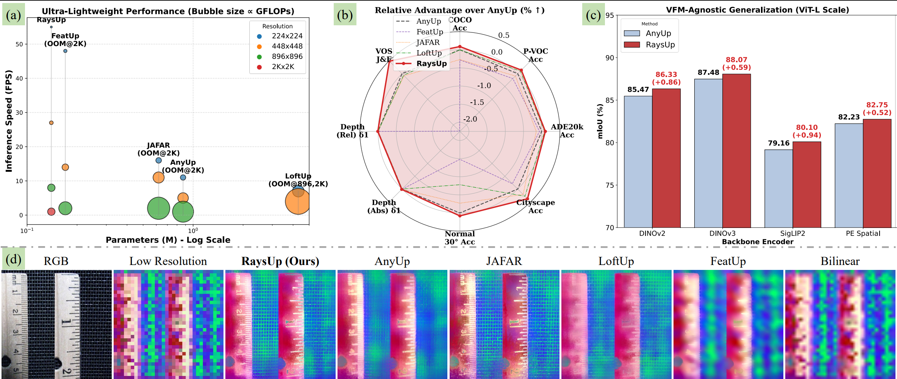
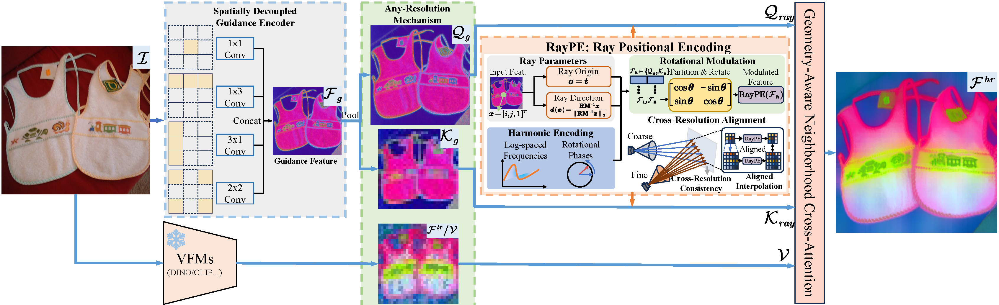
Given an input RGB image ${I} \in \mathbb{R}^{3 \times H_{in} \times W_{in}}$ and a low-resolution feature map ${F}^{lr} \in \mathbb{R}^{D_f \times H_{lr} \times W_{lr}}$ extracted from a Vision Foundation Model (VFM), where $D_f$ denotes the feature dimension and $(H_{lr}, W_{lr})$ are typically small (e.g., $16 \times 16$ or $32 \times 32$), the goal of RaysUp is to reconstruct a high-resolution feature map ${F}^{hr} \in \mathbb{R}^{D_f \times H_{any} \times W_{any}}$ at an arbitrary target resolution $(H_{any}, W_{any})$. To achieve this, RaysUp first employs a lightweight Spatially Decoupled Guidance Encoder to extract direction-aware guidance features from the input image, producing ${F}_g \in \mathbb{R}^{D_g \times H_{in} \times W_{in}}$, where $D_g$ denotes the dimensionality of the guidance features. Then, an adaptive average pooling operation generates a target-resolution query ${Q}_g \in \mathbb{R}^{D_g \times H_{any} \times W_{any}}$ and a VFM-resolution key ${K}_g \in \mathbb{R}^{D_g \times H_{lr} \times W_{lr}}$. Both ${Q}_g$ and ${K}_g$ are subsequently encoded via Ray Positional Encoding (RayPE) to produce geometry-aware ray representations ${Q}_{ray}$ and ${K}_{ray}$, which embed implicit 3D spatial priors. Finally, a geometry-aware Neighborhood Cross-Attention mechanism aggregates the low-resolution features ${F}^{lr}$ (acting as the value ${V}$) into the high-resolution positions, yielding the reconstructed feature map ${F}^{hr}$. This process ensures spatial consistency across resolutions while preserving the underlying 3D geometric structure.
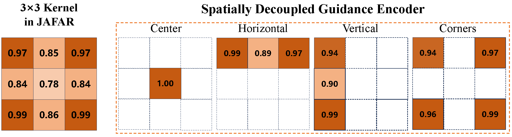
Visualization of convolutional kernel weights. Conventional kernels in JAFAR assign lower weights to the center and higher weights to corners and edges, potentially reducing central channel mixing and causing holes in upsampled features. In contrast, the Spatially Decoupled Guidance Encoder increases central weights to 1.00 and employs independent horizontal, vertical, and corner branches, enhancing spatial consistency and preserving semantic continuity during cross-attention.
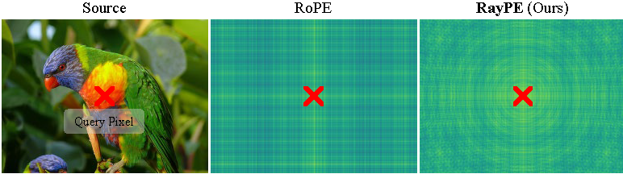
Implicit Geometric Injection in RayPE. RoPE is defined on a planar isotropic 2D Euclidean grid, where the positional phase is linearly associated with pixel coordinates $(i,j)$: $\boldsymbol{\theta}_{\mathrm{RoPE}}(i,j)=[i\omega,\; j\omega]^T$ ($\omega$ denotes the frequency). In contrast, RayPE implicitly encodes 3D spatial positions using normalized camera rays. \textit{Assuming an identity camera extrinsic matrix}, the positional phase is: $$\begin{equation*} \scriptsize \boldsymbol{\theta}_{\mathrm{RayPE}}(i,j) = \omega \cdot \frac{[i,j,f]^T}{\sqrt{i^2+j^2+f^2}}, \end{equation*}$$ where $f$ denotes the focal length. During upsampling, the positional phase in RoPE shifts with increasing coordinates, requiring additional interpolation for alignment. In contrast, RayPE preserves geometric feature consistency under identical viewing directions, thereby naturally achieving scale equivariance. As shown in the above figure, RayPE extends positional encoding from a 2D image grid to the unit viewing sphere, enabling the attention mechanism to model angular consistency rather than pixel-distance consistency.
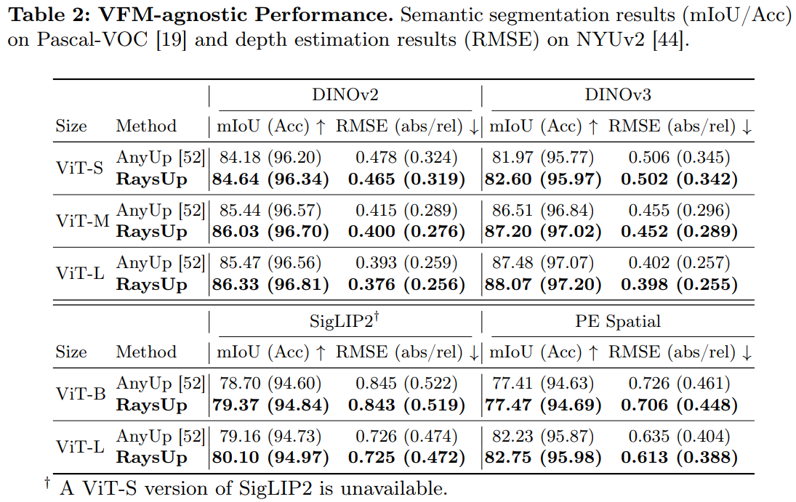
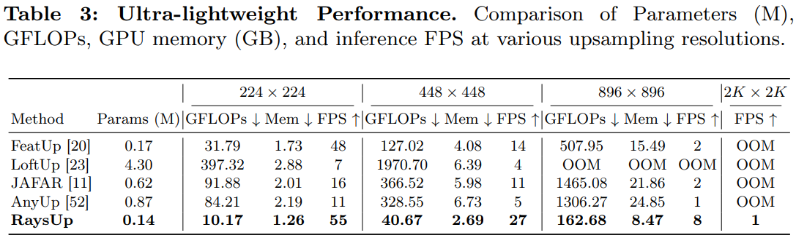
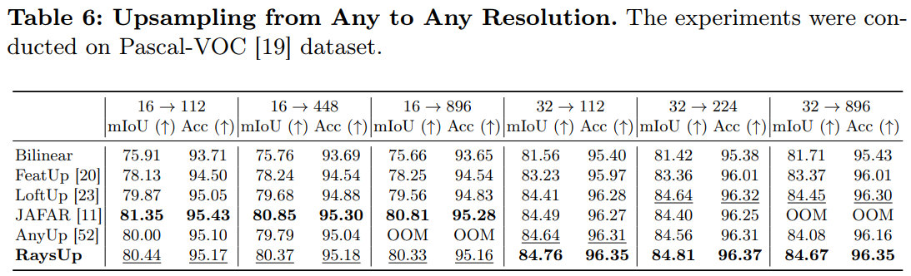
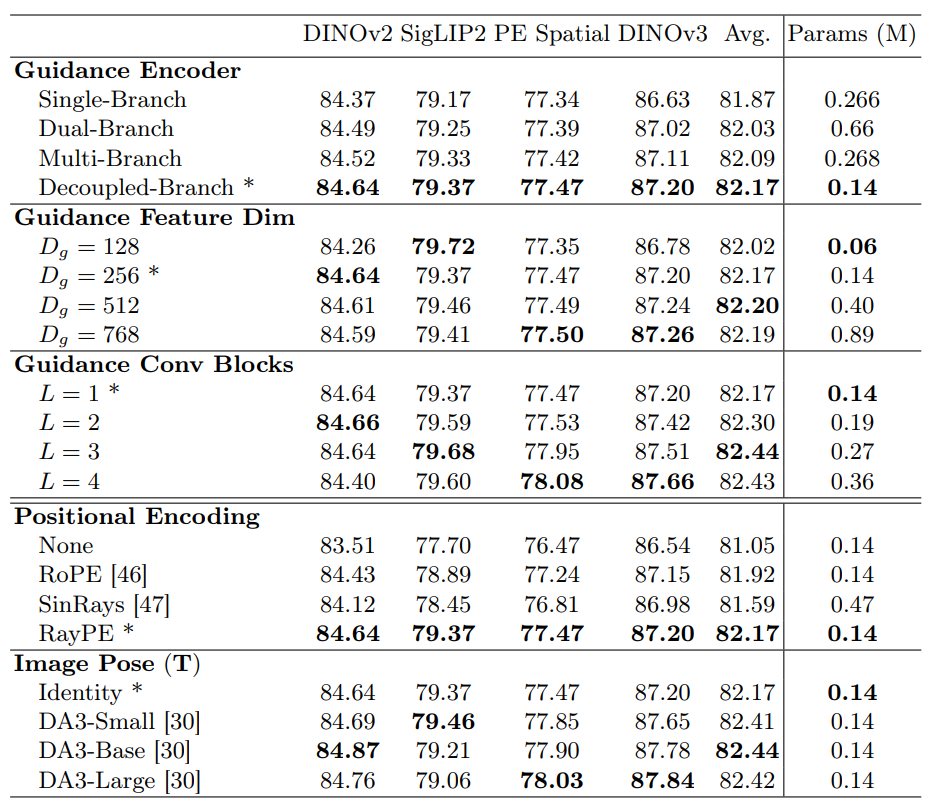
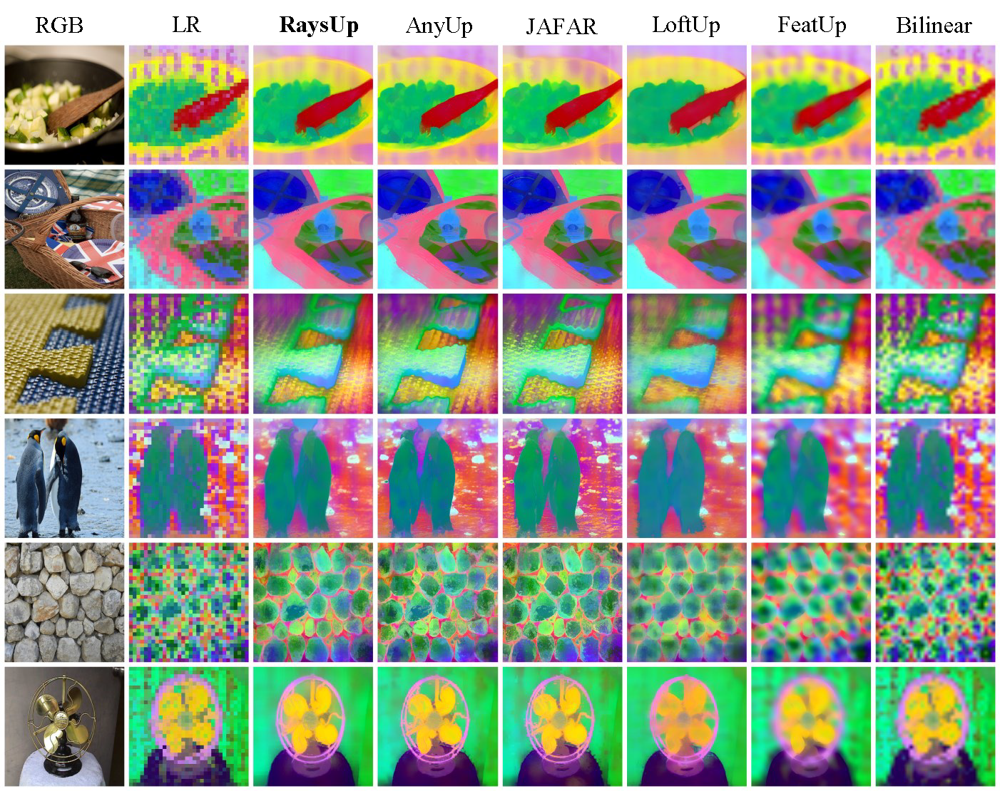
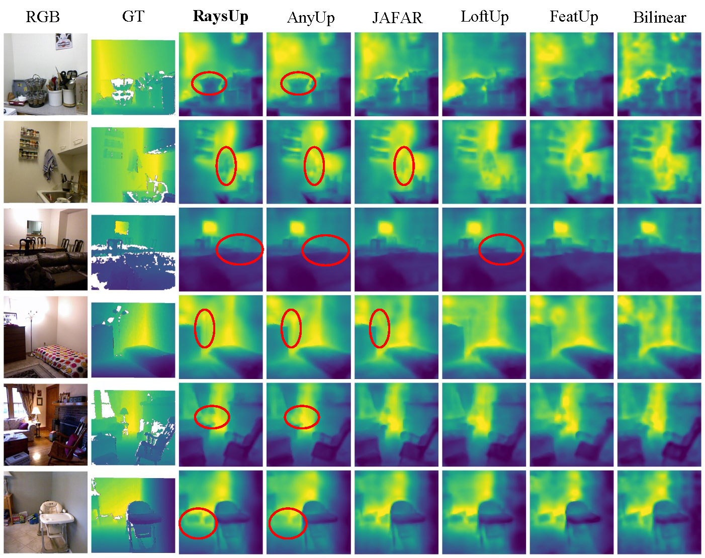
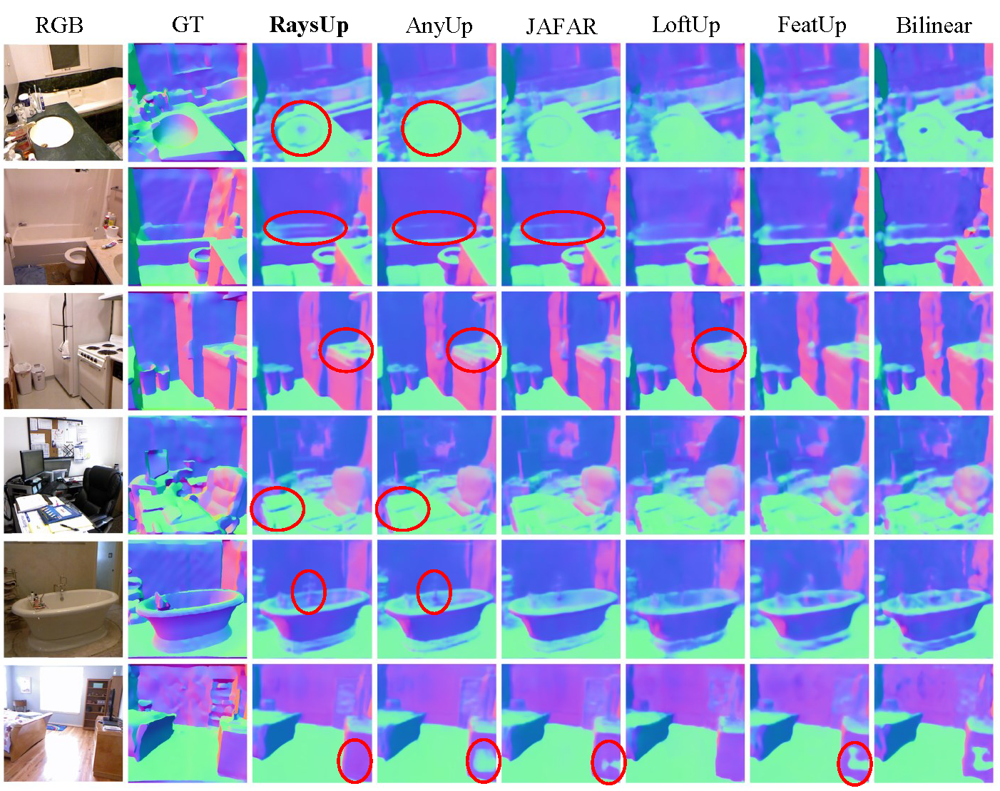
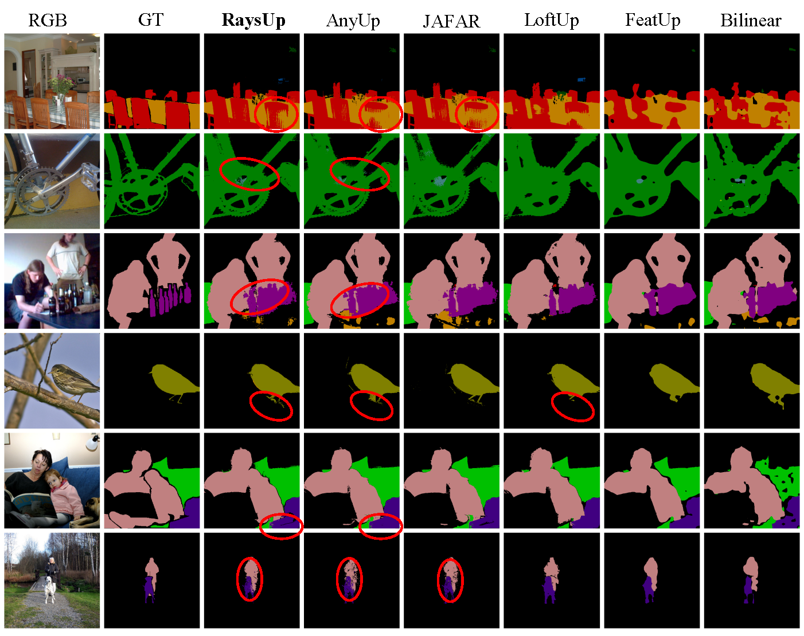
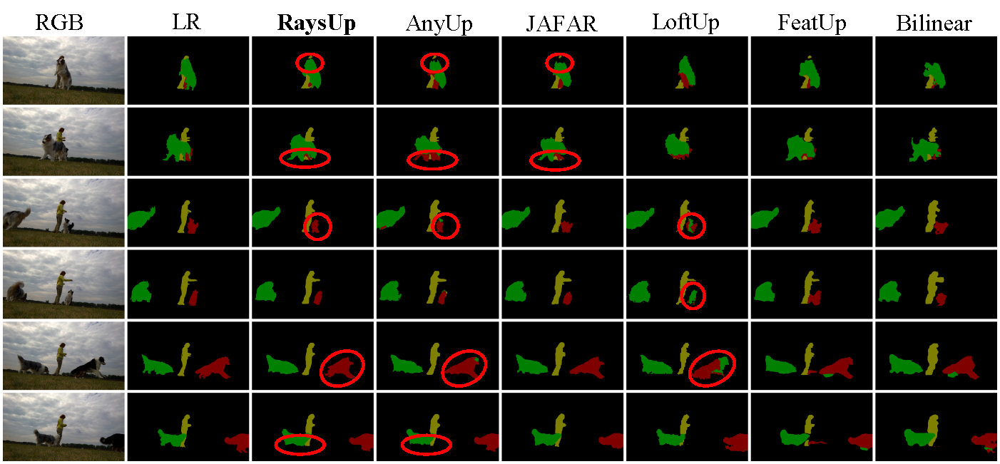
@inproceedings{raysup_eccv2026,
title={RaysUp: Ultra-light Universal Feature Upsampling via Geometry-Aware Ray Representation},
author={Ding, Yuchuan and Li, Linfei and Zhang, Lin and Shen, Ying},
booktitle={ECCV},
year={2026}
}